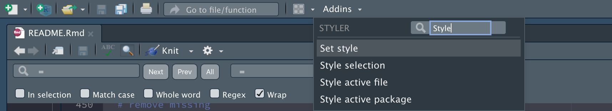

TL:DR
If you’re wondering how to style your code, check out the tidyverse style guide. The styler package has a great Addin for quickly styling files and directories. This post also covers a topic related to coding style (naming files), and I recommend checking out Jenny Bryan’s naming things talk.
Why you should care about code style
To those of us writing code, our goal should be to write code that clearly and effectively communicates 1) what was done, and 2) what was created. There’s an underlying narrative arc to every data analysis, and distilling that into something others can follow is an integral part of being a competent data scientist. Even for small, seemingly unimportant projects, we are always writing code for at least two people: future us and the computer running the code.
Programming style guides create consistency and minimizes the reader’s confusion. By specifying and adhering to a style guide, we can provide a foundation for anyone who reads our code to 1) understand what we did to solve a particular problem, 2) if and where we ran into trouble, and 3) how we communicated the results. Coding style should also promote correct syntax and structure, so it’s easier for the computer to execute.
What code style should I follow?
The tidyverse style guide and R For Data Science are excellent resources for writing precise, consistent code. In this post, we’ll go over some additional packages that make coding styling easier and discuss customizing your coding style while maintaining brevity and clarity. Putting a style guide in place formalizes any ambiguity about how we’re going to write our code, but leaves flexibility in what code we’re going to write.
An example project
Let’s assume we have a project based on the excellent paper Good enough practices in scientific computing. We will create four folders like the ones described in this section. See the image below as an example:
project layout
This project will use the video game sales datasets from Kaggle found here.
The Packages
Below we add the packages we’ll be using in this project.
library(tidyverse)
library(janitor)
library(styler)
library(inspectdf)
library(hrbrthemes)The Folders
The code chunk below create the necessary folders for this project, which we will call goodenuff. The tidyverse style guide recommends naming vectors using snake case, and using nouns instead of verbs to define variable names.
Naming vectors
Below we create the project_folders vector with c() and <-.
# create vector of four folder folders
project_folders <- c("data/", "doc/", "results/", "src/")We set up this project using the fs and purrr packages. Read more about how to use these functions here and here.
First we set up the folders by defining a vector of folder names and using purrr::map() to iterate through them with fs::dir_create(). The .x argument in purrr::map() is the project_folders vector, and the second argument .f is function we’d like to pass to every item in project_folders. We also wrap everything in purrr::quietly() to reduce the output.
# create project_folders vector
project_folders <- c("data/", "doc/", "results/", "src/")
# map project_folders to dir_create
quietly(map(.x = project_folders, .f = fs::dir_create))We can see these folders have been created (note we’re using .Rproj files here!)
# check
fs::dir_tree(".")
# ├── data
# ├── doc
# ├── goodenuff.Rproj
# ├── results
# └── srcThe Files
Below we create script files for each step in a data analysis project (import -> tidy -> transform -> wrangle -> model -> communicate), including a runall.R script that runs all six sequential files. All of these get stored in the script_files vector.
# create vector of script files
script_files <- c("src/01-import.R", "src/02-tidy.R", "src/03-wrangle.R",
"src/04-visualize.R", "src/05-model.R",
"src/06-communicate.R", "src/runall.R")
# map script files
quietly(map(.x = script_files, .f = fs::file_create))
# verify
fs::dir_tree("src")# src
# ├── 01-import.R
# ├── 02-tidy.R
# ├── 03-wrangle.R
# ├── 04-visualize.R
# ├── 05-model.R
# ├── 06-communicate.R
# └── runall.RWe want to organize the script files in a way that clearly shows what we’re doing at each step (and in which order they should be run).
Dealing with long lines of code
Next we create the project files (note the correct directory in each file name). We can see there are seven files listed in this section of the paper, and we can store these in the project_files vector.
# create project files vector
project_files <- c("CITATION", "README", "LICENSE", "requirements.txt", "doc/notebook.md", "doc/manuscript.md", "doc/changelog.txt")Now we’re facing a common problem when writing code: long lines. The style guide recommends keeping line length to 80 characters because it makes it easier to print on the screen. We can set a ruler as a guide too by following the steps below:
set a ruler for a guide!
If we re-write this code ourselves, it might look like this:
project_files <- c("CITATION", "README", "LICENSE", "requirements.txt",
"doc/notebook.md", "doc/manuscript.md", "doc/changelog.txt")Now we can map this new vector to fs::dir_create() and check the new folder contents.
purrr::map(.x = project_files, .f = fs::file_create)
# check
fs::dir_tree(".", recurse = TRUE)And we end up with a project folder that looks like this:
# ├── CITATION
# ├── LICENSE
# ├── README
# ├── README.Rmd
# ├── data
# ├── doc
# │ ├── changelog.txt
# │ ├── manuscript.md
# │ └── notebook.md
# ├── goodenuff.Rproj
# ├── requirements.txt
# ├── results
# └── srcThe Data
These data come from Kaggle and contain video game sales in 2019. We’re only interested in the vgsales-12-4-2019.csv data file, which we can download here and save in a sub-folder called, data/raw/.
# create a raw data folder
fs::dir_create("data/raw/")
# create a list of zipped files
zipped_files <- list.files("data/raw/", full.names = TRUE)
# import the data into a data object
VideoGames <- map_df(.x = zipped_files, .f = read_csv)# Multiple files in zip: reading 'vgsales-12-4-2019.csv'
# Parsed with column specification:
# cols(
# .default = col_double(),
# Name = col_character(),
# basename = col_character(),
# Genre = col_character(),
# ESRB_Rating = col_character(),
# Platform = col_character(),
# Publisher = col_character(),
# Developer = col_character(),
# VGChartz_Score = col_logical(),
# Last_Update = col_character(),
# url = col_character(),
# img_url = col_character()
# )
# See spec(...) for full column specifications.Naming data vs. everything else
I differ slightly from the tidyverse style guide when it comes to naming rectangular data objects (tibbles, data.frames, data.tables, etc.) vs. non-rectangular objects (vectors, lists, functions, etc.).
# how I name rectangular data:
# DataFrames
# Tibbles
# DataTables
# how I name everything else:
# vectors
# lists
# my_function()I chose this method of naming because 80% or more of the time I am working with rectangular data, so I like to differentiate these objects from others in my current environment.
Script file headers
R script file headers should give the reader 1) a description of the file and what the file does, 2) the last date it was updated, 3) the author and any contributors, and 4) the version number.
#=====================================================================#
# File name: 01-import.R
# This is code to create: Importing video game data
# Authored by and feedback to: @mjfrigaard
# Last updated: 2020-09-01
# MIT License
# Version: 0.1
#=====================================================================#Read more about script file headers in Reproducible Research with R and RStudio, 3rd Edition.
Writing functions
We can also document the contents of our .R files with section headers, which we will create with a function titled, add_script_section(). This function has been adapted from R for Data Science.
There are lots of tips on writing functions in the tidyverse style guide and R for Data Science, so we’ll just cover the basics here:
- use verbs instead of nouns for function names
- comments in your functions should explain the “why” not the “what” or “how”
- use
snake_caseorcamelCase(and be consistent)
- strive for brevity and clarity (if you have to chose one, settle for the former)
add_script_section <- function(title = "", padding = "-") {
# script sections help organize your code files
title <- paste0(title)
width <- 75 - nchar(title)
cat("# ", title, " ", stringr::str_dup(padding, width), "\n", sep = "")
}When we use the add_script_section() function to create a section header, we see the following:
add_script_section(title = "Packages")
# Packages ------------------------------------------------------------We can also use = for code sections. I like to create section headers in each .R file because it’s easy to identify them in the RStudio source pane.
Import data script
Other functions we might want to include in 01-import.R include janitor::clean_names() or arguments passed to readr::read_csv() like col_types and col_names.
# clean names
VideoGames <- VideoGames %>% janitor::clean_names(case = "snake")
# verify
names(VideoGames)# [1] "rank" "name" "basename" "genre"
# [5] "esrb_rating" "platform" "publisher" "developer"
# [9] "vg_chartz_score" "critic_score" "user_score" "total_shipped"
# [13] "global_sales" "na_sales" "pal_sales" "jp_sales"
# [17] "other_sales" "year" "last_update" "url"
# [21] "status" "vgchartzscore" "img_url"When we’re done, our 01-import.R file should look like this,
#=====================================================================#
# File name: 01-import.R
# This is code to create: Importing video game data
# Authored by and feedback to: @mjfrigaard
# Last updated: 2020-09-01
# MIT License
# Version: 0.1
#=====================================================================#
# Packages ------------------------------------------------------------
library(tidyverse)
library(janitor)
# Import CSV file ------------------------------------------------------------
# source: https://www.kaggle.com/ashaheedq/video-games-sales-2019
# create a raw data folder
fs::dir_create("data/raw/")
# create a list of zipped files
zipped_files <- list.files("data/raw/", full.names = TRUE)
# import the data into a data object
VideoGames <- map_df(.x = zipped_files, .f = read_csv)
# clean names
VideoGames <- VideoGames %>% janitor::clean_names(case = "snake")We can call this .R script using source("src/01-import.R").
source("src/01-import.R")Style your code with styler
The styler package has a handy Addin. If you have the styler package loaded, you can click on the Addins dropdown at the top of the Source pane and search for “style”.

Select “Style active file” and watch the magic happen.

It might take a little while, but you’ll see your code styled automatically by RStudio.

You can also add some tweaks to the styler package. I like the addon by Garrick Aden-Buie available here. After you’ve loaded the package, you can just run the grkstyle::use_grk_style() function and select “Style active file” again.
Here is an example of how it looks:

You can see the code formatting is slightly different than the standard tidyverse_style (which is the default setting in styler).

I hope you found this post useful!